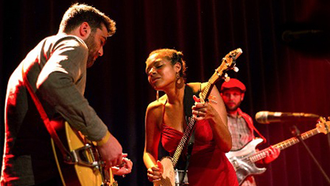

Main Stage (Renowned Artists):
The Main Stage: Featuring renowned jazz artists.
The Blue Note Architects: This seasoned ensemble brings the spirit of the iconic Blue Note jazz club to
life, meticulously crafting timeless melodies with virtuosic improvisation.
The Ellington Legacy: Carrying the torch of the legendary Duke Ellington, this band reimagines his
groundbreaking compositions with fresh energy and a deep respect for tradition.
The Midnight Standards: Step back in time with these masters of elegance. Expect a captivating set of
classic jazz standards delivered with unparalleled smoothness and sophistication.
Up-and-Coming Stage (Rising Stars):
The Nu-tet: This innovative quintet pushes the boundaries of jazz with their electrifying blend of
tradition and fresh sonic exploration. Prepare to be surprised and delighted.
Improv Syndicate: Witness the next generation of improvisational masters at work. This band thrives on
spontaneous creation, weaving intricate musical conversations in real-time.
The Next Collective: A collaborative force to be reckoned with, this group features rising stars who
combine their unique voices to create a truly dynamic and forward-thinking sound.
Relaxing Retreat (Smooth Sounds):
Whispering Pines: Imagine gentle breezes swaying through a pine forest as this band serenades you with
calming melodies and soothing rhythms. Perfect for unwinding and letting the worries of the day melt away.
The Sunset Trio: This intimate trio creates a warm and mellow atmosphere, perfect for enjoying a quiet
conversation or simply getting lost in the beauty of the music.
Bossa Nova Breeze: Let the cool rhythms and subtle vocals of Bossa Nova whisk you away to a state of pure
relaxation. This band is the soundtrack to a perfect summer evening.